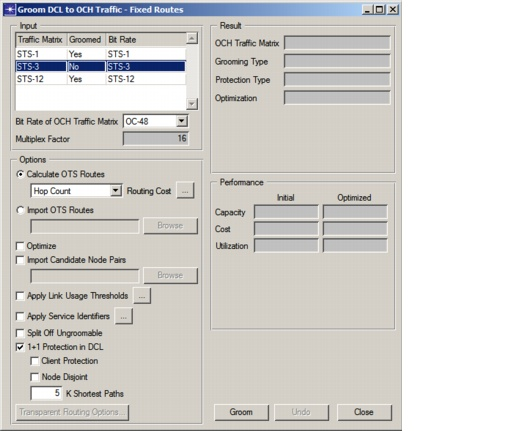
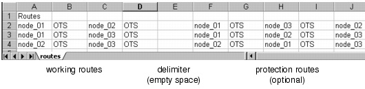

Grooming DCL to OCH Traffic > Grooming DCL Traffic with Fixed Routes
Grooming DCL Traffic with Fixed Routes
The Optimized Routes grooming algorithm optimizes DCL routes to minimize the network cost. This might create some undesirable routes in the OCH layer (for example, routes with backhauling). In some cases, you might want to groom traffic using fixed routes instead. You can calculate the routes in the OTS layer or import them from an external file. The Fixed Routes grooming algorithm does not change these routes—it just decides whether to bypass the signal optically or electrically within nodes to minimize the network cost.
To groom traffic using fixed routes, choose Design > Groom DCL to OCH Traffic > Fixed Routes. This opens the Groom DCL to OCH Traffic - Fixed Routes dialog box (Figure 8-3).
Figure 8-3 Groom DCL to OCH Traffic - Fixed Routes Dialog Box

The options in this dialog box are similar to those for grooming using optimized routes. For more information, see Table 8-1-Groom DCL to OCH Traffic - Optimized Routes Dialog Box.
You must also specify the physical routes of the DCL traffic matrix. There are two options for doing this:
- Calculate OTS Routes—You can choose to have a shortest path algorithm calculate the routes. In this case, you specify the routing cost criterion. These routes are calculated on the OTS layer. Therefore, if you specify 1+1 protected routing, disjointness down to the OTS layer is guaranteed.
- Import OTS Routes—You can import the paths from a flat (.csv) file. The file format is shown in Figure 8-4. Each line specifies the working route (and the protection route in the case of protected routing) specified as a list of nodes, from start to end node; each node is followed by the layer (in this case, "OTS" for all nodes). For more information, see Importing and Exporting Route Data Files.
Figure 8-4 Importing OTS Routes: File Format

| Home © 1987-2007 OPNET Technologies, Inc. All Rights Reserved. This software may be covered by one or more U.S. Patents. See complete patent notice in the Legal Notices section. OPNET Support Center |